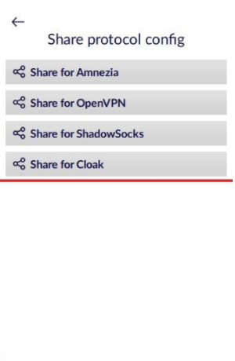
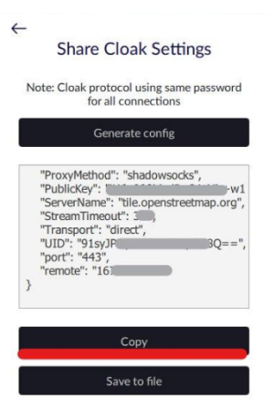
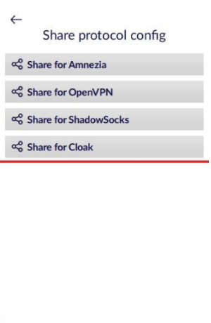
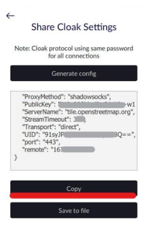

1. Покупаем VPS у любого хостинг-провайдера (Amnezia работает с любыми серверами с операционной системой Ubuntu (официально поддерживаемая версия - 20.04), так же поддерживается Debian 10).
2. Скачиваем приложение Amnezia на Windows версии 2.0.2, подключаемся через него к серверу. Вносим данные VPS в приложение, выбираем “Configure VPN protocols manually”, выбираем протокол OpenVPN over Cloak.
3. Скачиваем и распаковываем клиент ShadowSocks, нам нужен .exe файл. https://github.com/shadowsocks/shadowsocks-windows/releases
4. Скачиваем Cloak для Windows (ck-client-windows-386 для 32-битных систем или ck-client-windows-amd64 для 64-битных систем)
5. Перемещаем установленный плагин Cloak (т.е. просто .exe файл) в распакованную ранее папку Shadowsocks - плагин будет находиться в одной папке с Shadowsocks.exe
6. Переименовываем плагин в "cloak" (без кавычек, просто cloak)
7. Запускаем Shadowsocks на Windows, в трее щелкаем по нему правой кнопкой и нажимаем на "Ассоциированный ss:// ссылки"
8. Открываем в Windows Amnezia - "Share connection" - "Share connection for Shadowsocks" . Сначала выберете протокол OpenVPN over Cloak, далее зайдите в настройки, выберете “Share connection” => “Share for ShadowSocks”
9. Нажимаем "Copy string", вставляем адресную строку браузера, соглашаемся открыть ссылку в приложении. Откроется редактор серверов Shadowsocks - будут всплывающие окна, нажимаем везде "ок"
10. Должны автоматически заполниться поля "IP-адрес, порт, пароль и шифрование". "Порт" и "Порт прокси" меняем на 443, в поле "Плагин" пишем cloak
11. Открываем в Windows Amnezia, “Настройки” => "Share connection" => "Share connection for Cloak", нажимаем "Copy"
 



12. Ниже в блокноте вставляем строку (без пробелов и переносов слов)
UID=*;AlternativeNames=;PublicKey=*;KeepAlive=0;ServerName=*;EncryptionMethod=aes-gcm;BrowserSig=chrome;Transport=direct;CDNOriginHost=;ProxyMethod=shadowsocks;NumConn=4
В строку для UID, PublicKey и ServerName (вместо *) вставляем значения UID, PublicKey и ServerName из скопированного из Amnezia текста (то, что идет после двоеточия, в кавычках, но копируем без кавычек - только само значение)
13. Выделяем строку из п.12 (со вставленными значениями UID ServerName и PublicKey), копируем
14. Возвращаемся в редактор серверов Shadowsocks и в строчку "Опции плагина" вставляем скопированную строку
15. Проверяем, что строка вставилась корректно - она должна начинаться с UID и заканчиваться NumConn=4
16. Нажимаем применить, ок. Если в списке серверов есть сервер с названием "Новый сервер" - его можно удалить, в списке останется один сервер - будет отображаться его IP
17. В трее щелкаем по приложению Shadowsocks - "Системный прокси-сервер" - "Для всей системы"
Автор гайда: regefone